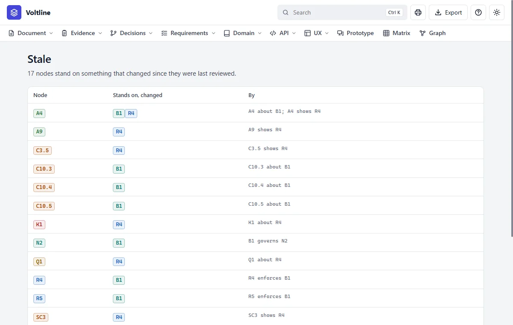
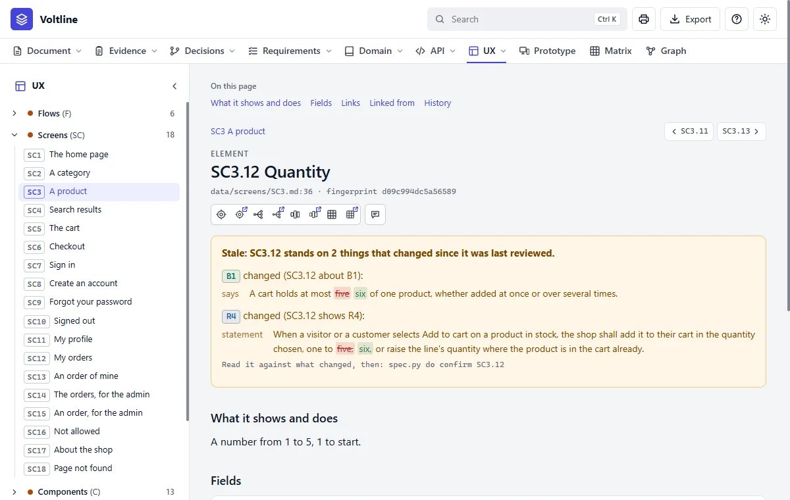

The story: five becomes six
A customer who buys in bulk asks you for six. Here's everything that happens next.
You'd normally just say so, and Claude would do all of this and show you. So first, here's what that conversation looks like. The rest of the page then opens it up a step at a time, with the real commands and answers, so you can see what happened. You can read the words and skip the grey boxes.
The numbers are real. The skill's own tests run these steps on a copy of Voltline. To try it yourself, copy examples/shop/specs first, so the example stays as it is.
That's rule B1. Voltline is agreed, so I'd set it back to draft first.
B1 reaches R4, R5, N2, A4, SC3.12 and three parts of C10. I'd reword those that say five, then read everything else that goes stale. Two prototypes also say five in their files: SC3 and SC5.
Shall I go ahead?
1. Ask what it touches
python app/spec.py impact B1B1 Up to five of a product (rule)
stands on: governs N2
stale at once if it changes (8):
A4 Add a product to the cart -- A4 about B1
C10.3 One fewer -- C10.3 about B1
C10.4 The quantity -- C10.4 about B1
C10.5 One more -- C10.5 about B1
N2 Cart -- B1 governs N2
R4 Add a product to the cart -- R4 enforces B1
R5 Change the cart -- R5 enforces B1
SC3.12 Quantity -- SC3.12 about B1
2. Set it back to draft, and change the rule
An agreed specification refuses every change, so going back to draft comes first. --because goes in the log.
python app/spec.py do set document status draft --because "The shop will sell six of a product"
python app/spec.py do set B1 says "A cart holds at most six of one product, whether added at once or over several times." --because "Bulk buyers asked for six"
python app/spec.py stale # exits 1: something is staleA4 stands on B1, which changed since (A4 about B1):
says: ...cart holds at most [five -> six] of one product, whether...
C10.3 stands on B1, which changed since (C10.3 about B1):
says: ...cart holds at most [five -> six] of one product, whether...
...
SC3.12 stands on B1, which changed since (SC3.12 about B1):
says: ...cart holds at most [five -> six] of one product, whether...
8 node(s) stale -- `spec.py do confirm <id>` once each is read again3. Change what enforces it
Requirement R4 says one to five in its statement, so it needs new words too.
python app/spec.py do set R4 statement "When a visitor or a customer selects Add to cart on a product in stock, the shop shall add it to their cart in the quantity chosen, one to six, or raise the line's quantity where the product is in the cart already."
python app/spec.py stale # exits 1: more is stale nowThe count goes from 8 to 17, because everything standing on R4 is told as well: the three roles, the risk K1, the question Q1, and the screen.

4. Change everything else that says five
Reading what went stale shows what else needs new words. Put these lines in a file called six.txt. One file makes one change, all or none:
set B1 name "Up to six of a product"
set R4.2 says "Given the product is in the cart with quantity 5, when 2 more are added, then the shop refuses it with 'up to six of each product' and the cart is unchanged."
set SC3.12 does "A number from 1 to 6, 1 to start."
set C10.4 does "The quantity, one to six."
set C10.5 does "Adds one, up to six."
remove-line N2 fields lines
add-line N2 fields lines meaning="one per product: the product, its price, its quantity of one to six, its total"
remove-line A4 takes qty
add-line A4 takes qty where=body type="integer, 1 to 6" required=yes rule="up to six of a product, B1"
remove-line A4 answers 200
add-line A4 answers 200 when="the product is in stock and the line stays within six" holds="the cart, with the line added or its quantity raised"
remove-line A4 fails 409
add-line A4 fails 409 when="the product is out of stock, B5, or the quantity is over six" says='{"error": "the product is out of stock, or the quantity is over six"} , which the page shows beside Add to cart'
set C10 rules "- The quantity is one to six (B1); the minus at one removes the line, as Remove does. (B1)\n- The line's total changes with its quantity, and the summary with it."Then apply it:
python app/spec.py do --file six.txt --because "Bulk buyers asked for six"R4.2 Given the product is in the cart with quantity 4, when 2 more are added,then the shop refuses it with "up to five of each product"and the cart is unchanged.
R4.2 Given the product is in the cart with quantity 5, when 2 more are added,then the shop refuses it with 'up to six of each product'and the cart is unchanged.
Now 30 nodes are stale. Note what wasn't touched: findings such as E14 still say five, and that's right. They record what was read in the old shop.
5. Read what went stale
This is the step that takes judgement, and it's why stale exists. Each node gets read against the change. Many need nothing: a role that may add to the cart is still a role that may add to the cart. Once a node has been read, confirm it:
python app/spec.py do confirm U1
python app/spec.py do confirm SC3.12Confirming is your word that someone read it. Claude does the reading, and tells you which ones it wants you to look at yourself.

6. Look at the prototypes
Nothing is stale now, but ready still says no:
prototypes to look at, for what they show has changed: C3, C9, C10, SC3, SC5, SC10
not ready to be agreedA drawing's words are in its file, where no link reaches them, so someone must look. Two really are out of date. The quantity fields on the product and cart screens are limited to five in their HTML, so redraw them by asking Claude Code:
<input id="qty" type="number" value="1" min="1" max="5" data-el="12"><input id="qty" type="number" value="1" min="1" max="6" data-el="12">A file that has moved clears itself. The other four, C3, C9, C10 and SC10, show nothing about the limit, so say they still hold:
python app/spec.py do confirm-drawn C37. Agree it again
$ python app/spec.py ready
ready to be agreed: only the user agrees it, with `do set document status agreed`
$ python app/spec.py do set document status agreed --because "Six of a product, read through"
set document status agreed -> document
changed:
document changed
status: [draft -> agreed]What you have at the end
- Every fact that said five now says six, and nothing was missed, because the links found it all.
- The log says who changed what, when and why. Try
python app/spec.py history B1. - The next person to ask why six? finds the reason in the history.
- Anyone who's built from this specification can run
spec.py changedto see what to redo.
The old Q1 stayed open throughout. It's for engineering, so it never stood in the way.